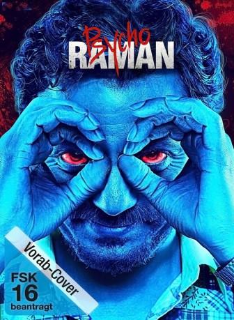

#4633 Raman Raghav 2.0
 
 IMDB-Wertung: 7.4 / 10
IMDB-Wertung: 7.4 / 10  Tomatometer: 85
Tomatometer: 85  Metascore: 0
Metascore: 0 
Mumbai in der Gegenwart. Hier treibt Serienkiller Ramanna (Nawazuddin Siddiqui) sein Unwesen, inspiriert von dem wahren Raman Raghav, der in den 1960er Jahren mehr als 40 Menschen tötete. Ramannas erster Mord erwischt ausgerechnet den Dealer des jungen, trendigen Polizisten Raghavan (Vicky Kaushal), der ein Verhältnis mit der attraktiven Simmy (Sobhita Dhulipala) und eine ausgeprägte Beziehung zu Koks hat. Der Psychopath heftet sich an die Fersen des Cops, den er für seinen Doppelgänger hält und ist besessen von ihm...
Jahr: 2016
Dauer: 133 Minuten
FSK:
Land: Indien Studio: Alive Vertrieb und MarketingTonspuren:
Untertitel: Deutsch,
Auflösung: 1080p (1920x808) Größe: 4884 MB
Genre: Krimi, Drama, Thriller
Regisseur: Anurag Kashyap
Drehbuch: Simon Pegg
Soundtrack:
Darsteller:
 Nawazuddin Siddiqui als Ramanna, Raman
Nawazuddin Siddiqui als Ramanna, Raman- Vicky Kaushal als Raghavan, Raghav
- Sobhita Dhulipala als Simmy
- Mukesh Chhabra als Loan Shark
- Vipin Sharma als Raghav's Father
- Amruta Subhash als Raman's Sister, Lakshmi
- Anuschka Sawhney als Ankita
- Deepali Suryakant Badekar als Simmy's Maid
- Ashok Lokhande als Sister's Husband
- Harssh Singh als Sub Inspector
- Rajesh Jais als ADCP - Farid Haq
- Hitesh Dave als Constable Kamble
- Vikash Bajpayee als Pipe Shopkeeper
- Donald Burman als Chacha
- Bikram Chetti als Watchman
- Mohammad Farookh als Tea Boy
- Aman Gill als Man 1 with Simmy
- Pawan Gill als Man 2 with Simmy
- Chirag Gupta als Forensic Man
- Murari Kumar als Tea Stall Man
- Devina Medda als Loan Shark's Wife
- Sona Mohapatra als Singer at Club
- Rhea Pagar als Violet
- Kalidas Parthitan als Michael
- Anik Ram Verma als Chacha's Neighbor
- Saksham Sudhija als Lakshmi's Son
- Hirabai Tambe als Old Lady
Datei: X:\2016(N-Z)\Raman Raghav 2.0 (2016, FSK, 1920x808).mkv seit 25.10.2016
Festplatte: HD 2016(A-Z)
 Es gibt insgesamt 182 Filme in der Gruppe '2016(N-Z)'
Es gibt insgesamt 182 Filme in der Gruppe '2016(N-Z)'